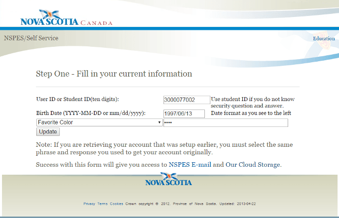
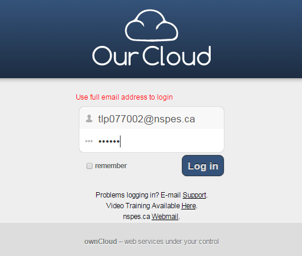
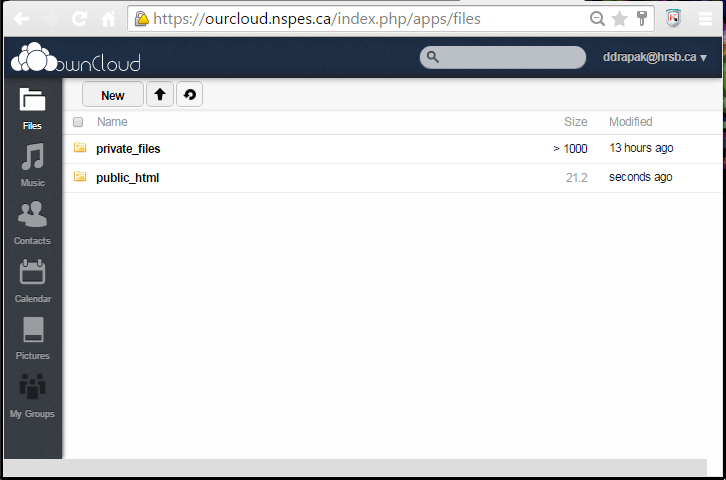

Every public school student in Nova Scotia has their own web space, even if they do not know about it.
Here is how you set it up:
- Set up your NSPES email account
- Set up Ourcloud
- Upload HTML files into the
publicfolder -
Access your public files through:
https://ourcloud.nspes.ca:8443/~yourUserName.nspes.ca/yourFileName.html
1. Set up your NSPES email account
If you are a public student in Nova Scotia, you will have an email account created within 24 hours of becoming a new student. Most of you have had an NSPES (Nova Scotia Public Education System) account for years without knowing it. Before you start, you will need the following information to activate it:
- Your name
- Your birthdate
-
Your Nova Scotia student number
(check your student id, a report card, PowerSchool, or ask a teacher to look it up) - Some time to set up accounts
- Paper or a phone to record your information
Now go to https://selfservice.nspes.ca/cgi-bin/account.pl.
Let's say that we have a student, Tremaine Lewis Parsons,
with a date of birth of June 13th, 1997, and student number of 3000077002.
We would fill in the form as follows:

The Favourite color question is for password recovery in case you forget. It is tricky and slow to have your password reset: choose a question and answer that you will remember.
Once you submit the form, it will create a username for you. In Tremaine's example, his new email address will be tlp077002@nspes.ca. (Do you see the pattern?) Choose a smart password, then put your username and password somewhere safe, like stored in your phone, or kept in your wallet, etc.
Log in to your webmail account at https://nspes.ca/login.php to see if it works.
If you have to change your password, go to the same page as above:
https://selfservice.nspes.ca/cgi-bin/account.pl
2. Set up Ourcloud
Ourcloud is a Dropbox-like service for Nova Scotian students and teachers.
It is hosted at https://ourcloud.nspes.ca/.
Your Ourcloud password is always the same as your email password.
Log in to Ourcloud using your full email address:

Once you log in you will see two folders: private_files and public_html

Click on private_files. This is where you can store files that are only ever seen by yourself.
You can create folders in here to organize things. You can add documents easily by dragging and dropping them from the file folder onto your web browser window.
For each document, there is a download option as well so you can easily retrieve work.
3. Upload HTML files
Now go back to and click on public_html. Anything put into this folder is publicly viewable from the internet. This is terrific if you want to share things you made. You can drag and drop HTML documents (as well as any other documents) into this folder. Remember to include images and other resources if your page uses them.
4. Browse your HTML files live on the web
Let's say Tremaine dropped a document called test.html into public_html.
You could access that folder by browsing to:
https://ourcloud.nspes.ca:8443/~tlp077002.nspes.ca/test.html
In other words, the address of your document will be:
https://ourcloud.nspes.ca:8443/~yourUserName.nspes.ca/yourFileName
I organize my public_html folder into subfolders.
For example, I put my Computer Programming 12 documents into a folder called cpg.
Thus the address of my main Computer Programming 12 page is available at:
https://ourcloud.nspes.ca:8443/~ddrapak.hrsb.ca/cpg/index.html
More goodies
Ourcloud has a series of mobile apps so that you can access your Ourcloud folders and documents from your devices. I have mine set up on my iPad.
It also has a nice desktop app that synchronizes one of your home computer folders with Ourcloud. It is really nice to save HTML pages to the special folder on my laptop and have them just appear seconds later on the web. It saves a lot of time when developing things.
These Sync apps are available here: https://owncloud.org/install/. You do not have to run the server software yourself in order to use Ourcloud.
And no, I don't know why the province of Nova Scotia decided to use the name Ourcloud instead of the usual software name, Owncloud. I imagine they have their reasons: they are decent people.
Make internet friends, not internet enemies
Isn't it nice that our education system trusts you with your own free public web space? Wouldn't it be terrible if someone posted foolish (illegal, or cruel, or high traffic, or inconsiderate, or otherwise thoughtless) stuff on their web space and then the province took away the service from EVERYONE?
Don't be that guy. (Or gal.) Play nice...
Seriously: they are actually trusting you with something powerful. Don't blow it.